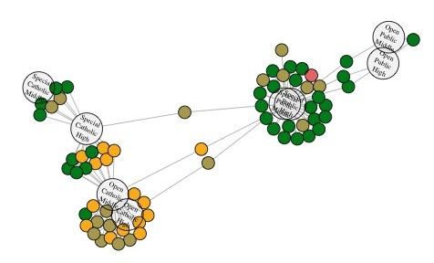

Chapter 2: Phonological change in Philadelphia /ae/
 Readtl;dr: The traditional Philadelphia /ae/ split (PHL) is being replaced by an incoming Nasal /ae/ split (NAS). Elite public schools are the leaders in this change, while Open Admissions Catholic schools are a conservative force holding on to the traditional /ae/ split.
Chapter 3: Allophonic analysis of traditional Philadelphia /ae/
 Read
Read
tl;dr: PHL is allophonic. Also, phonology can handle a precise and limited number of lexical exceptions.
Chapter 4: Intraspeaker variation in /ae/
 Read
Read
tl;dr: Intermediate speakers learn both allophonic systems, and produce variation between these systems as a whole.
Chapter 6: The inevitability of phonological change
 Read
Read
tl;dr: Even though NAS is simpler than PHL, it is not inevitable that NAS would come to replace PHL.